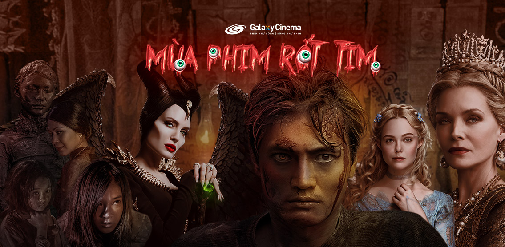

Phim Hay Tháng 10.2019: Mùa Phim Rớt Tim
Nếu cảm thấy loạt bom tấn trong tháng 9 vẫn chưa đủ thỏa mãn cho dân ghiền phim thì hãy thưởng thức ngay những tuyệt phẩm sẽ ra mắt trong tháng 10 này. Chào mừng tất cả tín đồ điện ảnh đến với mùa phim kinh dị lớn nhất trong năm, đồng thời mời các Stars cùng tham gia “quẫy” hết mình ở ngày hội Halloween đầy ám ảnh tại Galaxy Cinema.
Ngay từ những ngày đầu tháng tư, khi đoạn teaser trailer về bộ phim Joker được tung ra, người hâm mộ trên toàn thế giới đã rất háo hức đón chờ ngày ra mắt siêu phẩm mới về “Hoàng tử tội ác” – một trong những kẻ phản diện vĩ đại nhất lịch sử điện ảnh.
Ở thập niên 80, huyền thoại Jack Nicholson đã để lại dấu ấn với tạo hình Joker như bước ra từ truyện tranh trong bộ phim Batman của đạo diễn Tim Burton, diễn xuất của ông mang tới một gã hề với nụ cười điên loạn, đầu óc mưu mô kèm theo điệu bộ dí dỏm nhưng rất tàn độc. Jack Nicholson dường như trở thành một chuẩn mực mỗi khi nhắc đến nhân vật Joker khi thổi hồn cho việc định hình nhân vật và góp phần khiến tên hề trở thành ác nhân đáng sợ thú vị nhất.
Nhiều năm sau, Heath Ledger đảm nhận vai Joker sau khi nhận khá nhiều luồng ý kiến chê bai từ đám đông vì cho rằng anh không đủ khả năng nhưng lại dám dũng cảm thể hiện một vai diễn đã được vĩ đại hóa qua tay Jack Nicholson. Đến khi phim ra mắt, cả thế giới đã đi từ ngạc nhiên đến kinh hoàng khi chứng kiến một Joker điên loạn một cách rất nghệ thuật qua màn trình diễn của Heath Ledger. Anh đã làm nên kỳ tích ngoạn mục khi trở thành diễn viên đóng nhân vật trong phim siêu anh hùng đầu tiên đoạt giải Oscar.
Tại Liên hoan phim Venice năm nay, bộ phim mới về Joker do Todd Phillips làm đạo diễn đã nhận được tràng vỗ tay tám phút trong buổi công chiếu, đồng thời cũng đoạt giải thưởng cao quý Sư Tử Vàng. Hầu hết những nhà phê bình và giới chuyên môn đều dành nhiều lời khen ngợi cho tác phẩm và màn trình diễn xuất chúng của Joanquin Phoenix với vai Joker được dự đoán sẽ trở thành ứng viên nặng ký của giải Oscar sắp tới.
Là một diễn viên theo trường phái Method Acting, luôn hết mình và tâm huyết trong từng vai diễn, liệu Joker của Joaquin Phoenix sẽ gieo rắc nỗi ám ảnh kinh hoàng như thế nào?
Joker chính thức được khởi chiếu tại các hệ thống rạp trên toàn quốc từ ngày 04.10.2019.

Tiếp tục hòa mình vào không khí Halloween, khán giả sẽ có cơ hội theo dấu cuộc hành trình giải mã bí ẩn về một câu chuyện có thật từng xảy ra cách đây hơn 20 năm tại vùng sông nước miền Tây trong Thất Sơn Tâm Linh.
Sau đoạn trailer được hé lộ, màu sắc u ám rùng rợn đã được thể hiện rõ nét khi nhắc đến một thầy thuốc với vẻ ngoài hiền từ, thường xuyên chữa bệnh miễn phí cho người dân nhưng ẩn bên trong hắn là một ác quỷ với âm mưu tàn độc đang chuẩn bị thực hiện kế hoạch sát nhân của mình.
Với sự góp mặt của dàn diễn viên: Quang Tuấn, Hoàng Yến Chibi, Thanh Tú, Đinh Y Nhung, Lâm Thanh Mỹ, La Thành. Vai trò và số phận của những nhân vật sẽ ra sao khi tội ác của tên sát nhân ngày càng dã man hơn? Liệu còn những bí ẩn tâm linh khủng khiếp nào sẽ bị phơi bày?
Câu trả lời nằm trong Thất Sơn Tâm Linh, phim ra mắt tại các rạp từ ngày 09.10.2019.
Lý An được xem như một trong những đạo diễn Châu Á hiếm hoi có sự nghiệp thành công tại Hollywood, ông từng đoạt giải Oscar, Quả Cầu Vàng, BAFTA… Danh sách các tác phẩm nổi bật trong sự nghiệp điện ảnh của ông rất có thể sẽ được bổ sung thêm bằng bộ phim hành động mới nhất với tên gọi Gemini Man – Đàn Ông Song Tử.
Nội dung của phim xoay quanh việc Henry Brogan, tay sát thủ hàng đầu bị truy sát bởi một kẻ lạ mặt. Vấn đề ngày càng phức tạp khi người này này có khả năng phán đoán được hết mọi hành động và kế hoạch của Henry. Bí ẩn được hé lộ khi danh tính của người bí ẩn này thực chất là phiên bản thời trẻ của Henry được tạo ra bằng cách nhân bản vô tính.
Cốt truyện kịch tính đi kèm những màn hành động mãn nhãn, kỹ xảo đỉnh cao với việc trẻ hóa Will Smith khi tái hiện hình ảnh nhân vật sát thủ Henry thời niên thiếu. Đàn Ông Song Tử hứa hẹn sẽ đem đến nhiều thú vị cho những ai đang mong chờ một bom tấn hành động đúng nghĩa.
Gemini Man: Đàn Ông Song Tử, dự kiến khởi chiếu từ ngày 11.10.2019
Năm 2014, Disney cho ra mắt phiên bản live-action dựa trên bộ phim hoạt hình nổi tiếng Công Chúa Ngủ Trong Rừng. Cốt truyện được kể thông qua góc nhìn của nhân vật phản diện Tiên Hắc Ám – Maleficent do Angelina Jolie thủ vai chính.
Trải qua 5 năm, phần hậu truyện của tác phẩm tiếp tục ra mắt tại các rạp chiếu phim với tên gọi Meleficent: Mistress Of Evil. Lần này có vẻ như mâu thuẫn giữa Meleficent và công chúa Aurora trở nên căng thẳng hơn, đặc biệt là việc hoàng tử Phillip cầu hôn nàng nhưng nàng tiên hắc ám đã phản đối quyết liệt. Việc này dẫn đến chuyện nữ hoàng Ingrith – mẹ của hoàng tử Phillip tuyên bố Aurora sẽ là con gái của bà, căng thẳng giữa hai người phụ nữ quyền lực chính thức lên đến đỉnh điểm.
Mọi việc sẽ như thế nào? Liệu có cuộc chiến khủng khiếp nào diễn ra hay không? Hãy cùng đón xem Maleficent: Mistress Of Evil để biết kết quả cuối cùng, phim ra mắt tại các rạp toàn quốc vào ngày 18.10.2019.
Xuất hiện lần đầu tiên vào năm 1938 dưới dạng truyện tranh và được chuyển thể thành series truyền hình live-action vào thập niên 70, The Addams Family: Gia Đình Addams là một trong những phim kinh dị nổi tiếng dành cho thiếu nhi.
Tháng 10 năm nay, phiên bản hoạt hình của Gia Đình Addams sẽ quay trở lại, kèm theo những tình huống hài hước oái ăm mới của gia tộc giàu có nhưng không kém phần kỳ dị này. Tạo hình của nhân vật lần này được giới thiệu sát với truyện tranh gốc, bên cạnh đó là dàn “sao” tham gia lồng tiếng gồm Charlize Theron, Finn Wolfhard, Snoop Dogg, Oscar Isaac.
The Addams Family: Gia Đình Addams dự kiến khởi chiếu từ ngày 25.10.2019
Thể loại tìm kiếm và tiêu diệt thây ma luôn có sức hút đối với các “mọt phim”, mùa Halloween này, hãy cùng gặp lại bộ tứ săn ma siêu lầy lội nổi tiếng trong Vùng Đất Thây Ma – Zombieland: Double Tap. Cuộc phiêu lưu mới nhất của nhóm sẽ diễn ra ở vùng trung tâm nước Mỹ, họ lên kế hoạch tìm kiếm những người còn sống sót và loại bỏ lũ zombie khát máu.
Với sự góp mặt của dàn diễn viên thực lực như Woody Harrelson, Emma Stone, Jesse Eisenberg, Bill Murray. Phim Vùng Đất Thây Ma: Cú Bắn Đúp, ra mắt tại các rạp ngày 25.10.2019.
“Bắc kim thang, cà lang bí rợ, cột qua kèo là kèo qua cột…”. Những câu hát trong bài dân ca Nam Bộ vốn đã quen thuộc và gắn liền với tuổi thơ của nhiều người, nhưng sẽ ra sao nếu giai điệu vui tươi này được vang lên bởi một hồn ma theo cách đầy ai oán.
Một gia đình với nhiều bí mật đáng sợ, một người anh luôn mong muốn tìm lại đứa em gái bị mất tích, một cái chết đầy uẩn khúc của cô gái trẻ, sự thật khủng khiếp của câu chuyện sẽ được hé lộ trong Bắc Kim Thang. Phim dự kiến ra rạp vào ngày 25.10.2019.